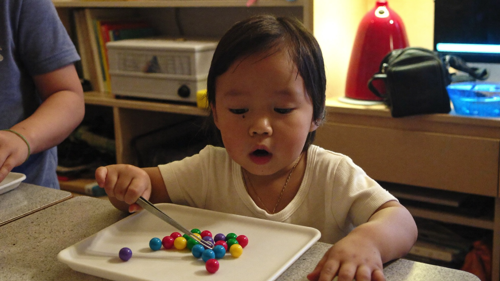

Fun Fine-Motor Activities That Get Kids Ready to Write
By Leslie Dykstra · Certified Early Childhood Specialist · Williamson County, TN

Writing is really a fine-motor skill first. Before a child can form a letter clearly and comfortably, their hands need to be strong and coordinated enough to do the job. As a certified early childhood specialist, I've seen again and again that children who come in with strong fine-motor skills pick up writing much more quickly than those who jump straight to pencil-and-paper practice.
If you have a preschooler at home in Williamson County — or a kindergartner who is still building those skills — this list is for you. None of these require a trip to a specialty store. Most use things you probably already have.
Why do fine-motor skills matter so much for writing?
Writing requires a lot from small hands. The fingers have to grip a pencil, apply just the right amount of pressure, and move in small, controlled paths — all at the same time. That coordination doesn't come from coloring sheets. It comes from months and years of hands-on play.
Children with weak fine-motor skills often:
- Press too hard (or too lightly) when they write
- Tire out quickly during writing tasks
- Have trouble controlling where a line starts or stops
- Struggle to hold a pencil in a functional grip
The good news is that building these skills is genuinely enjoyable for most young children. They don't need to know it's "practice."
What activities build fine-motor strength at home?
Here are some of my favorites, organized by what they build best.
For finger strength and squeezing:
- Playdough — rolling, pinching, and pressing
- Squeezing water from a sponge or turkey baster
- Clothespins — opening and closing them onto a container rim
- Spray bottles (great for watering plants!)
For pincer grasp and precision:
- Picking up small objects (dried beans, buttons, pom-poms) with just the thumb and index finger
- Tweezers or tongs to move objects from one bowl to another
- Threading large beads onto a shoelace
- Peeling stickers off a sheet
For hand and wrist control:
- Tearing paper — not with scissors, just by hand
- Crumpling paper into tight balls
- Cutting with child-safe scissors along straight, then curved lines
- Drawing on a vertical surface (a chalkboard, or paper taped to the wall)
For crossing the midline (which supports fluid writing):
- Painting or drawing across the full width of a large paper
- Rolling a ball back and forth with both hands
- Simon Says with crossing-body movements
How much time should we spend on this each day?
Not as much as you might think. Ten to fifteen minutes of hands-on fine-motor play each day makes a meaningful difference over a few months. That could be one focused activity or just free playdough time while you make dinner.
The key is consistency over intensity. A little bit every day is worth more than a long session once a week.
If you're working toward kindergarten readiness, our free 25-point Kindergarten Readiness Checklist includes fine-motor milestones alongside reading, math, and social skills — a good way to see the full picture.
Can screen time help with fine-motor skills?
Touchscreen tapping is not the same as fine-motor development. Swipes and taps are large, repetitive motions. They don't build the small-muscle strength or finger independence that writing requires.
That's not a reason to panic if your child uses a tablet. It just means screen time doesn't count as fine-motor practice. Make sure they're also doing the hands-on activities above.
What should I look for to know if my child is on track?
By age 4, most children can:
- Hold a crayon or marker with some finger control (not just a fist)
- Snip paper with scissors
- String large beads
By age 5–6, most children can:
- Cut along a line fairly well
- Copy simple shapes (circle, square, cross)
- Hold a pencil in a functional grip
If your child is moving into kindergarten and some of these feel out of reach, that's worth addressing now rather than later. Early, targeted practice with fine-motor activities makes the first year of writing go so much more smoothly. And if the grip itself is the sticking point, we've covered how a child's pencil grip develops and when to gently correct it in its own post. You can also read more about what to look for before kindergarten — because writing and reading development overlap more than most parents realize.
Our programs at Little Minds, Big Futures include writing-readiness work alongside phonics and early literacy. 1-on-1 sessions mean your child gets the practice they need at exactly their level.
Frequently asked questions
My child hates playdough. What else can I try?
Try wet sand, kinetic sand, or even cornstarch and water. Any material that requires squeezing, pressing, or shaping will do the job. Cooking together (kneading dough, rolling dough balls) works just as well.
Are fine-motor toys worth buying?
Some are great — lacing cards, snap beads, and peg boards are genuinely useful. But you don't need to spend much. A bag of dried beans and two bowls with a pair of tongs will do more than most "educational" toys.
When should I start worrying?
If your child is 5 or older and still struggles to hold a pencil or use scissors for basic tasks, it's worth a conversation with a specialist. A personalized assessment can show you exactly where to focus your energy.
Ready for a closer look?
If you'd like help assessing your child's writing readiness, I'd love to connect. Book a free 15-minute consultation and let's talk about what your child is ready for next.
Little Minds, Big Futures — where every child's potential takes flight.